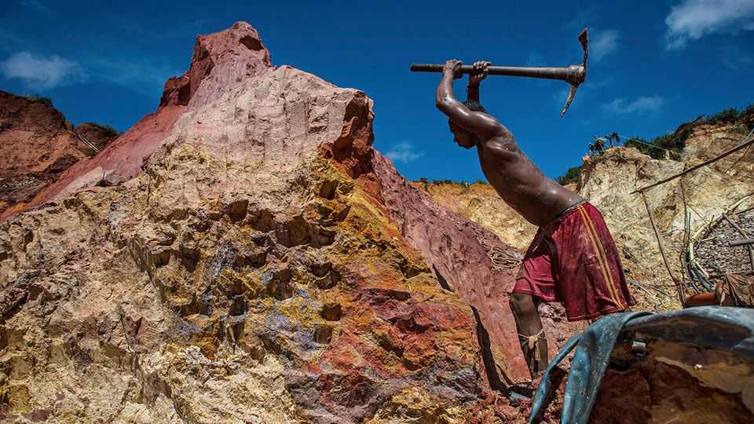
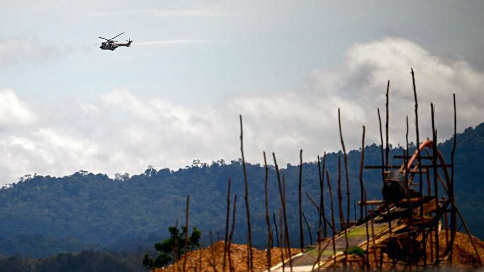

America is using force to drive gangsters from Venezuela’s gold
It won’t be a pushover
June 25th 2026

An unusual silence hangs over Las Claritas, Venezuela’s ground zero of illegal gold mining. For over a decade, gangs known as sindicatos governed this normally noisy strip of jungle in the eastern state of Bolívar. On June 8th army helicopters swooped in to chase them away. Thousands of freelance prospectors fled. Then the United States launched its own air strike, killing Héctor “Niño” Guerrero Flores, boss of the Tren de Aragua crime group. “This action was co-ordinated closely with our friends in Venezuela, with whom we are working very well,” trumpeted Donald Trump on social media.
He has some cause for celebration in Venezuela. Since US special forces captured the dictator, Nicolás Maduro, in January, the Trump administration has been overseeing the country’s oil exports. By securing a beachhead in Bolívar, it is opening a pathway to the mines. “The clean-up gives the Americans access to one of the richest gold deposits in the world,” says a Venezuelan in the mining industry. And as America’s and Venezuela’s first joint military operation, it displays Mr Trump’s leverage over Delcy Rodríguez, the acting president. Their shared goal is to bring Western mining companies back into the country, says Leonardo Vera of the Central University of Venezuela.
Many of those companies lost their concessions when a former president, Hugo Chávez, nationalised swathes of Venezuela’s economy in the early 2000s. Some renegotiated access with Mr Maduro in 2016, when he opened the Orinoco Mining Arc (AMO), a Portugal-sized chunk of land, much of it rainforest. By then, the sindicatos had overrun the pits. They paid bribes to the army for access and supplies. With oil revenues collapsing, Mr Maduro embraced this criminal system. Gang-controlled mining spread fast, destroying ecosystems, ruthlessly exploiting workers and sparking deadly turf wars across the AMO.
Mr Maduro’s seizure presented an opportunity. In March Doug Burgum, Mr Trump’s interior secretary, visited Caracas, the capital, with two dozen mining executives. Trafigura, a big Swiss-based commodity trader, said it was buying $100m-worth of Venezuela’s partially refined gold ore. In May an American firm sold an option to develop half of its abandoned project in Las Claritas to Richard Warke, a Canadian metals magnate. The deal meant investing up to $200m over four years. Just before the raid, Western investors had been spotted at a famous mining complex in the nearby city of El Callao.

The area around Las Claritas holds the world’s fourth-largest reserves of unmined gold. Venezuela as a whole boasts the seventh-largest reserves of iron. Industrial mining was so badly run under Messrs Chávez and Maduro that base metals’ output has slumped by 90% since 2006, according to BloombergNEF, a data provider. So there is scope for rapidly increasing exports, particularly of gold. Legislation to woo foreign investment is helping. In April the National Assembly passed a mining-reform bill to prolong concessions, cut royalty payments to the state and allow for international arbitration of disputes.
Enormous challenges remain. Venezuela’s mines, like its oilfields, are a shambles. The Venezuelan Mining Chamber, a trade group, says they need $50bn of investment; some say more. At the mining complex in El Callao two-thirds of underground tunnels are flooded. Most equipment is broken or has been stripped for parts. Expertise is scarce; last year just five mining engineers graduated from Caracas’s prestigious Simón Bolívar University.
Unlike with oil, which was still controlled by the state when Mr Maduro was nabbed, expanding the mines presents a big security problem. Mr Trump and Ms Rodríguez have nailed one gang boss in Mr Guerrero, but Tren de Aragua is mostly intact, says Ronna Rísquez, an expert on the organisation. Mr Guerrero’s lieutenants, including Johan Petrica, boss of the Las Claritas sindicato, are still at large.
Nor was Tren de Aragua the only threat in the mining belt. Two far more established rebel groups from neighbouring Colombia operate there: the National Liberation Army and dissidents of the former Revolutionary Armed Forces of Colombia, better known as the FARC. “They’re not going to give up without a fight,” says Phil Gunson of the International Crisis Group, a think-tank. That may be why the army chose the easier target of Las Claritas. Even if Mr Trump called for more action, Venezuela’s hollowed-out forces would struggle to defeat hardened guerrillas, with or without American air strikes.
The final concern is Venezuela’s reputation. Illegally mined gold accounts for up to 90% of its production, says Transparency International, an anti-corruption monitor. Most Western refineries refuse to process it. Much of it now ends up in the Middle East. International mining companies may argue that by doing the mining themselves they can control the process more responsibly. But they are still having to do business with a regime with an appalling record, says Catriona Rainsford of Global Witness, an environment and rights NGO.
The Rodríguez government is walking a fine line. While having to please its American supervisors and financiers, it cannot afford to alienate its own army, so long entwined in illegal mining. The generals made millions off the wildcatters, creaming off profits in return for providing supplies and protection. They will hate to lose so lucrative a side hustle. Being allowed to perform legitimate services for American corporations could be a consolation prize. But it may be more tempting to maintain ties with the nomadic bandits, many of whom will now migrate deeper into national parks. “If you clean up one area, they are going to move somewhere else,” says the Venezuelan working in the mining industry. “It’s that simple”. ■
Sign up to El Boletín, our subscriber-only newsletter on Latin America, to understand the forces shaping a fascinating and complex region.